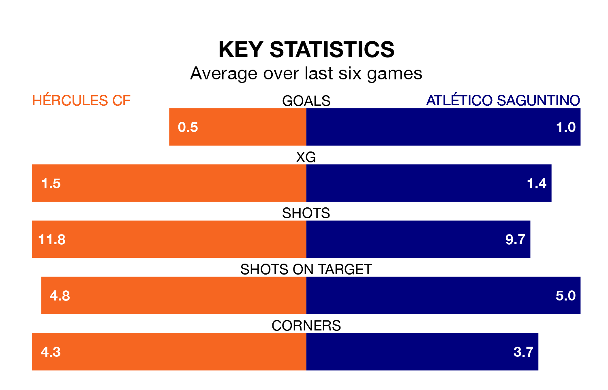

Hércules CF are heavy favourites to keep all three points at home in Sunday's late kick-off against Atlético Saguntino.
Hércules, who sit fourth in the Segunda División RFEF Group 3 with 29 games played, are priced at 1.7 to seal victory at the Estadio José Rico Pérez.
Sitting nine places and 14 points behind them in the table, Atlético Saguntino are 4.4 to win with *Betting Company*, while the draw is at 3.2.
With 40 goals in 29 games so far this season, Hércules are scoring more than average in the league with 1.4 goals per game. And they are conceding fewer than average, letting in 27 goals at a rate of 0.9 per game.
Atlético Saguntino, meanwhile, are below average scorers, with 1.0 goal per game, compared to a league average of 1.2. They have conceded 1.2 goals per game.
In the last 10 years, Hércules and Atlético Saguntino have played each other on seven occasions. Hércules won four of them, Atlético Saguntino two, and they drew once.
On average, Hércules scored 1.4 goals and Atlético Saguntino 1.1 in those matches.
Their last meeting was on November 26, when Atlético Saguntino won 3-1 at home.
The home side are in mixed form in the Segunda División RFEF Group 3, with one win and five draws from their last six games.
With three wins and a draw over that period, the visitors' form is slightly better – they have taken 10 points from 18, compared to Hércules's eight.
Hércules's last match was on March 30, a 1-0 win against UD Alzira, with Ryan Patrick Nolan getting the goal for Hércules.
Atlético Saguntino beat CE Europa 2-1 last time out, on March 31, with Guillermo Andrés López and Jean-Paul N'djoli on the scoresheet.
Updated: 16:41 (UTC), 04/04/24